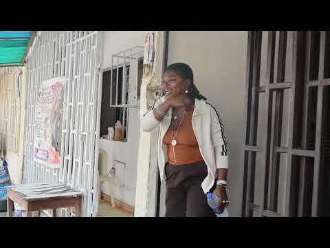

← All worldsCHRICED / Digital media & IT

Production / Editing / Digital support
Stories with
a civic purpose.
Behind the edit, the broadcast and the infrastructure: helping important conversations reach people.
Explore my contribution ↓
CAMPAIGN FILMFGM awareness campaignWatch on YouTube ↗
Behind the work
The brief
Support CHRICED’s digital presence and make civic stories accessible through media.
My approach
My work spanned video editing, production collaboration, field reporting support, IT infrastructure support and social media improvement strategy.
The work delivered
Contributions to campaign content and CHRICED Radio/TV productions. The linked videos provide examples of the published work.
See the work in motion.
FGM awareness campaignCHRICED Radio/TV — contribution 01CHRICED Radio/TV — contribution 02CHRICED Radio/TV — contribution 03
Opens on YouTube.
Have something in mind?
Let’s make it
mean something.
Tell me what you’re building, who it’s for and where you need a creative hand.
Start a conversation